jeysiec:
balioc:
jeysiec:
bambamramfan:
isaacsapphire:
discoursedrome:
balioc:
transientpetersen:
balioc:
I’ve started to think that there’s a lot of confusion surrounding the concept of noblesse oblige. By which I mean that I think it is misunderstood both by people who believe that they are displaying it, or that they ought to display it, and by people who are inclined to judge others for it or for its absence.
In particular: I think people believe that it’s about gestures. That if you’re rich or blue-blooded or privileged or whatever, that every so often you have to demonstrate that you’re a decent person with decent human sentiments by reaching out and doing something nice for some poor less-fortunate schlub. Give a whole bunch to a photogenic charity, or leave a really big tip, or some such.
And the thing is that, as a social strategy, that almost never works.
(There are rare exceptions. If the gesture is really big and really costly and really resonant, it can have some real moral impact. This almost certainly requires anteing up something other than money; poor schlubs naturally assume that big-shots possess functionally infinite money anyway, and aren’t impressed by their financial expenditures. The thing where old-money families send their sons off to war, even when it would obviously be easy for them to get out of fighting if they wanted, is a good example. That said – )
Envy can’t be beaten with moral suasion. If people are inclined to resent you for your wealth or your position, you’ve already lost the social game, there’s basically no gesture you can make that will change their minds. It doesn’t matter how nice you are. The hinge of envy is “I think this person has advantages that he doesn’t deserve,” and no one seriously believes that the way you come to deserve advantages is by being nice.
The way you deserve advantages is by playing a necessary role.
And that’s what noblesse oblige is really about. It’s about demonstrating that the community relies upon you (whatever “the community” means in context), and thus that your wealth/privilege/etc. is an important aspect of The Way Things Work, rather than simply being a random private benefit. It’s about employing two dozen domestic servants in your giant country manor, or maybe running the factory that employs half the breadwinners in town. It’s about being available as a fair and trustworthy judge for people’s disputes. It’s about serving as a private social safety net of last resort, through some means or other. In a very fundamental sense, of course, it’s about taking up your longsword and your plate mail and protecting your peasants from bandits.
This is a lot harder than it used to be. Rich powerful people aren’t the pillars of small communities anymore; they live in all-rich-and-powerful-person communities of their own. Often, they get their wealth and power through arcane methods that have no obvious direct positive consequences for any specific people. I know.
But if you’ve got privilege and you want to keep it, I’d strongly encourage you to think hard about this. The “I’m just a regular guy like you, except with tons of money and influence” strategy is rapidly ceasing to work at all, and it never worked that well to begin with. Stable aristocracies have something to offer.
Hannah Arendt talks about this – not using the term noblesse oblige, just talking about the dynamic – which is why it comes to mind. As she explains the historical precedents, exploiter classes generally don’t fall to revolutions or reorganizations. Exploitation sucks, but it tends to grow out of a stable productive relationship between the exploiter and exploitee, which provides at least some meaningful benefits to both of them. The upper classes that fall are the ones that no longer have any capacity to exploit anyone, the ones that are identical to the lower classes except for being much richer…
Earning your privileges through the the aggregate gains by others resulting from your fulfillment of the duties of your position is an anachronistic framing.
The privilege/duty combination is a feature of hierarchical frameworks and, to my knowledge, these ground themselves in appeal to history or natural law and not to their utility to the masses. Noblesse oblige does not exist in an egalitarian framework because there is no nobility to feel the burden. Importing it strikes me as an ad hoc fix for emergent inequality that the framework is not natively equipped to handle.
I see the rich people in your examples receiving censure either for a kind of category error (charitable giving asserting a social position that an egalitarian society does not agree should exist) or neglect (failing to send your children to war in a hierarchical society). The cure for the first is to act like you’re not rich or perhaps move somewhere where no one notices/makes a point of your wealth. You’re certainly right that gestures from the powerful don’t have the reinforcing social effect of true noblesse oblige.
Hrm. I do agree with most of this.
I think the relevant point-of-bridging is that, while you do in fact need stable hierarchy for noblesse oblige to function as intended, you don’t necessarily need an ancien regime blood-aristocracy or anything particularly resembling one. You just need an identifiable upper class with an actual valued role to play.
(Modern-era establishment Republicans have been trying to cobble that situation together by talking about “job creators” etc., claiming that we get our employment-centric prosperity from the virtue and duty of our contemporary aristoi. This fails hilariously, because (a) our alleged employment-centric prosperity has collapsed into rubble, and (b) insofar as the system is in fact running, it’s obvious to anyone paying attention that the “job creators” as a class aren’t doing anything special to make that happen.)
It’s true that the aristocrats traditionally haven’t justified their existence by straight-up appealing to the welfare of the masses, or even (more relevantly) by appealing to their functional role in preserving a non-frightening status quo…but I believe that, in actual reality, it is having such a role that allows aristocratic classes to exist without being destroyed by revolt or erosion.
And since we actually have identifiable aristocrats who don’t want to get overthrown, and who have giant piles of money and a precarious grip on power, I assert that it would be wise for them to find such a role pronto.
I do wonder how much the focus on rulership via natural law comes from the fact that most historical writing is by and for the privileged classes, who are likely to be receptive to that sort of argument. This may well just be my own anachronistic thinking, but it’s hard for me to imagine that “this toff owns your entire town because of natural law” went over that much better with the working class back then than it does now. It’s easy to take comfort in the great chain of being or whatever when it’s giving you a stable life seems to be working out pretty well for you, but when it’s not, well.
(It feels like the fact that the evil eye is the most common superstition on Earth must be saying something about the ubiquity of envy toward the upper class, but I’m not exactly sure what.)
Huh. Interestingly enough, noblesse oblige is something of a long term guiding principle for me, one that has endured better than any moral guide per see. This is a good description of it, how it fits in a community, and how it benifits the community, causing them to tolerate the greater wealth of the elite.
Incidentally, this seems to be the missing moral/cultural piece in Libertarianism. It’s so aggressively individualistic that it doesn’t seem to function with the reality of communities.
Rebageling for isaac’s last line.
As an American I’m confused by the OP, as the axioms they’re hanging their premise around just don’t apply to American culture.
Because they’re trying to say that being “the ones that are identical to the lower classes except for being much richer” is bad, when that’s actually exactly what you need to be to have the Americans love you.
Trump’s entire appeal was based on being identical to the lower classes except richer, because as the saying goes, “the poor people in America view themselves as temporarily embarrassed millionaires”. So they actually worship rich people who get to do their own thing and flip everyone else off because in their minds the rich worked hard to earn every penny and so should get to do whatever they want with it, and in turn the poor people think they’ll be rich one day too once they work hard enough themselves and they certainly don’t want to have to take on any responsibilities or obligations once they get rich.
The only people in America who possess any sort of noblesse oblige and use their wealth and privilege to help others are the Democrats… and they get “rewarded” for their hard work for others by being seen as corrupt elites out of touch with the common folk; i.e. what happened to Clinton.
I’m legit not sure if this is just a case of American culture being uniquely diseased or if it’s a global thing that the view of rich people is changing, but either way it seems kind of disingenuous to think the rich are in any sort of danger from the proles at the moment, as it means we’re likely to either get dangerously lazy thinking that wealth inequality will eventually fix itself once the rich screw up enough, or we’ll come up with the wrong solutions.
…I’m an American, for what it’s worth, and I’m talking primarily about American society.
The short-short version is: the dynamics you’re talking about (”temporarily embarrassed millionaires” etc.) get discussed a lot – and they’re real, at least to some extent, it’s not like those observers made them up out of thin air – but they’re not immutably baked into our culture. They grow out of particular social circumstances, which have been in the process of changing for my entire lifetime, and as the circumstances change the dynamics change too.
You’re right. Americans don’t find easy to believe in class at all. It’s much more natural for them just to believe in rich people and poor people. People have been pointing that out as early as de Tocqueville.
But that model is diverging more and more from reality, and so it’s disintegrating. We do have classes, and the truth of it is becoming impossible for even the most fervent would-be-capitalist-cheerleader to deny. Our employment-aristocracy sequesters itself within walls made of college and culture. At the very least, you basically can’t start climbing any success ladder in mainstream American society without a BA, which is an insurmountable barrier for many. As you start looking at more-and-more ambitious career tracks, there are greater barriers yet. And “career track” is definitely the right concept: we’ve structured our economy such that rising-through-the-ranks, to the extent that it was ever a thing, definitely isn’t anymore.
In theory, of course, you can grab your success the classic all-American way: tell the mandarins and gatekeepers to go fuck themselves and forge an individual path with your own talent. But that is much much much harder than it used to be, and getting harder all the time. Rising population, and global culture, mean stiffer competition for everything (including competition from Big Entrenched Incumbents); increased economic complexity means that making yourself a success tends to require VC, or studio support, or something where you’re going to get gatekept.
The best remaining make-it-as-an-individual-talent path, programming, is intellectually arcane in a way that makes it friendly to the children of aristocrats and unfriendly to the vast majority of people who really need such a path.
(And of course the Internet means that, in some “industries,” you can’t make a living as an upstart because you’re competing with infinite free content.)
This is not a secret to anyone anymore. Almost everyone who was inclined to believe in the American Dream* now thinks it’s dead; almost everyone thinks that the winners have closed ranks into an aristocracy and are keeping everyone else out. Donald Trump got elected on the strength of it.
* Almost every white person, anyway. Minorities and especially black people are more optimistic, because their circumstances have been legitimately improving in recent memory. But, I promise you, minorities understand that America has class issues.
When that filters into the public consciousness…well, people are going to react somehow.
*****
If you’re going to be an aristocracy, as opposed to a collection of individuals who happened to get rich through high-social-mobility processes, you need to justify your own existence by doing something useful. Right now, we have an aristocracy that doesn’t do anything for anyone except make and spend colossal amounts of money. This seems unstable to me.
*****
Sidebar:
The entire American elite has ossified into an aristocracy, and by now I think most people understand that. But it’s true that the Democrat-leaning elite started getting smacked around for it much earlier and much harder, which is largely because the Republican-leaning elite is much better at hiding its ossification. This is partly because it formed a political alliance with White Proles and spent years learning to pander to them culturally. (While the Dems made a political alliance with Minority Proles and spent years giving them something that at least vaguely resembled actual concrete support.) Mostly, though, it’s because the Democratic elites tend to be the ones who are more different from the lower classes, the ones who are sheltered by more gatekeeping. Academics and professionals versus businessmen.
No, the reason the Democratic elite get smacked around more is because your entire premise is simply false in current American culture.
If your premise that the upper class needs to justify its existence was true, then the Democrats would be wildly popular, the Republicans would be highly criticized, and Trump in particular–who is the walking epitome of the “wealthy person who does absolute jack shit that is useful to anyone but himself” class you claim is in trouble–would have never gotten a single vote.
Instead reality is clearly the other way around: The Democrats who follow your advice of justifying their existence by using their wealth and privilege for the benefit of all and generally earn it through halfway decent means are deeply hated and vilified, while in turn the Republicans you claim will be in trouble for doing nothing to justify their existence as wealthy are actually worshipped and loved even as they often exploit workers or just get rich via pushing paper around.
Look at how Occupy was reacted to for another good example of why your premise is wrong; the vast majority of the public, even the lower class ones, saw the activists as simply lazy mooches who really needed to just shut up and find jobs and earn money the “real” way like the rest of us.
Now obviously your premise was true at one point; witness all the revolts by the poor against the idle rich over the centuries in various bits of the world. But it’s not true now in American culture (again, see Occupy’s fate), and I was wondering if that is a peculiarity of American culture or of it’s spreading to other countries.
And the fact that it’s not true in American culture is frightening, as it leaves me scared that wealth inequality will continue to build until it’s too late simply because the poor will take forever to realize that those rich people who exploit workers, make free imaginary money off the stock market, and dodge taxes to freeload off public infrastructure, were not the people they should have been worshipping. Nor were the Democrat “elites” that were actually mostly trying to do the right thing the people they should have been hating.
I mean, in short, I deeply wish your premise was actually true, because then I wouldn’t have to be so terrified.
I don’t think this analysis holds up.
* The stereotypical Trump supporter, meaning “pretty much the median Republican” at this juncture, hates the country-club Republican elites. Trump got a lot of his mileage, early on, by smacking them around. See: every journalistic report and thinkpiece written in the past year about how the Republican base is in open revolt against its leadership. (This used to be a lot less true. For a long while, the country-clubbers somehow managed to disguise that they were a class at all. For a shorter while, after that cat got out of the bag, they managed to keep the base’s sympathy by painting themselves as “job creators” and hammering on divisive social issues. But that era seems to have passed, at least for now.)
* It’s also worth remembering that Trump got a lot of his mileage out of promising to be useful to the masses. He’s gonna bring back the steel-making and coal-mining work, he’s gonna get rid of the immigrant hordes who are taking your job, he’s gonna MAGA. From where I’m sitting (and from where I imagine you’re sitting), these promises were obviously blatant lies from the beginning…but lots of people believed him, and some of those who maybe didn’t quite believe him at least wanted to hear him pretend to be invested in maintaining the social/economic order, since all the mainstream elites are totally failing to display any interest in that.
* There’s some conflation here between the elites themselves and the political parties that represent them.
The Democratic elites are really not useful to most people in any way, and insofar as they are, it’s indirect and well-hidden. We’re talking here about university professors, corporate lawyers, financiers, artists who mostly make stuff for the coastal set…maybe the tech entrepreneurs and a few of the best-beloved entertainers get a pass, but apart from them, all those people could get shot tomorrow and it wouldn’t cause one bit of trouble for your average lower-class American. (NOTE: this is not any kind of condemnation or moral statement on my part, just an attempt to wave my hands at certain realities of class interaction.)
The Democratic party does some amount of vaguely-useful things for people, it’s true. Certainly more than the Republican party does. But –
(a) This doesn’t change people’s underlying perceptions, which are mostly driven by social realities.
(b) The vaguely-useful things done by the Democrats, unfortunately, fall more into the category of “gesture” than into the category of “maintaining the social order.” They have not saved American industry, or created a welfare state on which large numbers of people can meaningfully rely, or any such thing. Insofar as they’ve been trying to do the work of a thriving aristocracy, they’ve failed pretty hard.
I’m not sure what the example of Occupy gets you. The peasantry will despise the shiftless underclass, especially a shiftless underclass perceived to be animated by scary alien (in-this-case-urban) values, while being super mad at the useless wealthy nobles! The claim isn’t that there’s some kind of powerful chthonic anti-elite solidarity going on.
…I am less optimistic than you are, apparently, that seething resentment amongst the lower and middle classes will lead to good outcomes. But for better or worse, I think it’s hard to argue that they’re there.
transientpetersen:
balioc:
transientpetersen:
balioc:
I’ve started to think that there’s a lot of confusion surrounding the concept of noblesse oblige. By which I mean that I think it is misunderstood both by people who believe that they are displaying it, or that they ought to display it, and by people who are inclined to judge others for it or for its absence.
In particular: I think people believe that it’s about gestures. That if you’re rich or blue-blooded or privileged or whatever, that every so often you have to demonstrate that you’re a decent person with decent human sentiments by reaching out and doing something nice for some poor less-fortunate schlub. Give a whole bunch to a photogenic charity, or leave a really big tip, or some such.
And the thing is that, as a social strategy, that almost never works.
(There are rare exceptions. If the gesture is really big and really costly and really resonant, it can have some real moral impact. This almost certainly requires anteing up something other than money; poor schlubs naturally assume that big-shots possess functionally infinite money anyway, and aren’t impressed by their financial expenditures. The thing where old-money families send their sons off to war, even when it would obviously be easy for them to get out of fighting if they wanted, is a good example. That said – )
Envy can’t be beaten with moral suasion. If people are inclined to resent you for your wealth or your position, you’ve already lost the social game, there’s basically no gesture you can make that will change their minds. It doesn’t matter how nice you are. The hinge of envy is “I think this person has advantages that he doesn’t deserve,” and no one seriously believes that the way you come to deserve advantages is by being nice.
The way you deserve advantages is by playing a necessary role.
And that’s what noblesse oblige is really about. It’s about demonstrating that the community relies upon you (whatever “the community” means in context), and thus that your wealth/privilege/etc. is an important aspect of The Way Things Work, rather than simply being a random private benefit. It’s about employing two dozen domestic servants in your giant country manor, or maybe running the factory that employs half the breadwinners in town. It’s about being available as a fair and trustworthy judge for people’s disputes. It’s about serving as a private social safety net of last resort, through some means or other. In a very fundamental sense, of course, it’s about taking up your longsword and your plate mail and protecting your peasants from bandits.
This is a lot harder than it used to be. Rich powerful people aren’t the pillars of small communities anymore; they live in all-rich-and-powerful-person communities of their own. Often, they get their wealth and power through arcane methods that have no obvious direct positive consequences for any specific people. I know.
But if you’ve got privilege and you want to keep it, I’d strongly encourage you to think hard about this. The “I’m just a regular guy like you, except with tons of money and influence” strategy is rapidly ceasing to work at all, and it never worked that well to begin with. Stable aristocracies have something to offer.
Hannah Arendt talks about this – not using the term noblesse oblige, just talking about the dynamic – which is why it comes to mind. As she explains the historical precedents, exploiter classes generally don’t fall to revolutions or reorganizations. Exploitation sucks, but it tends to grow out of a stable productive relationship between the exploiter and exploitee, which provides at least some meaningful benefits to both of them. The upper classes that fall are the ones that no longer have any capacity to exploit anyone, the ones that are identical to the lower classes except for being much richer…
Earning your privileges through the the aggregate gains by others resulting from your fulfillment of the duties of your position is an anachronistic framing.
The privilege/duty combination is a feature of hierarchical frameworks and, to my knowledge, these ground themselves in appeal to history or natural law and not to their utility to the masses. Noblesse oblige does not exist in an egalitarian framework because there is no nobility to feel the burden. Importing it strikes me as an ad hoc fix for emergent inequality that the framework is not natively equipped to handle.
I see the rich people in your examples receiving censure either for a kind of category error (charitable giving asserting a social position that an egalitarian society does not agree should exist) or neglect (failing to send your children to war in a hierarchical society). The cure for the first is to act like you’re not rich or perhaps move somewhere where no one notices/makes a point of your wealth. You’re certainly right that gestures from the powerful don’t have the reinforcing social effect of true noblesse oblige.
Hrm. I do agree with most of this.
I think the relevant point-of-bridging is that, while you do in fact need stable hierarchy for noblesse oblige to function as intended, you don’t necessarily need an ancien regime blood-aristocracy or anything particularly resembling one. You just need an identifiable upper class with an actual valued role to play.
(Modern-era establishment Republicans have been trying to cobble that situation together by talking about “job creators” etc., claiming that we get our employment-centric prosperity from the virtue and duty of our contemporary aristoi. This fails hilariously, because (a) our alleged employment-centric prosperity has collapsed into rubble, and (b) insofar as the system is in fact running, it’s obvious to anyone paying attention that the “job creators” as a class aren’t doing anything special to make that happen.)
It’s true that the aristocrats traditionally haven’t justified their existence by straight-up appealing to the welfare of the masses, or even (more relevantly) by appealing to their functional role in preserving a non-frightening status quo…but I believe that, in actual reality, it is having such a role that allows aristocratic classes to exist without being destroyed by revolt or erosion.
And since we actually have identifiable aristocrats who don’t want to get overthrown, and who have giant piles of money and a precarious grip on power, I assert that it would be wise for them to find such a role pronto.
I agree that you don’t need blood-aristocracy in order to have a stable hierarchy but I don’t think our modern wealthy classes are able to fill the necessary role.
The symbolic function of nobility performing their duty was very much a way of asserting a natural (total) order and demonstrating the stability of that order. This stability was the main benefit to a mostly agrarian society who believed that the only thinkable alternative was Kali Yuga - not the direct results of the fulfilled duties. Maintaining the total order was the point, otherwise I would predict that more power sharing arrangements would have been found to give villages more local autonomy.
Our modern society is descendant from merchants and clerks. Their social model internally provided only a partial ordering of the world with duties only running to your direct superior and not across disparate organizations. The role of the wealthy within this framework is constrained by that same partial ordering. Even if they could find a course of action that generates the same stability of noblesse oblige, they still would have to expend a lot of work to get anyone to buy it and probably deeply reorder society in order to do so.
The root of our disagreement is that I don’t believe the egalitarian/transactional framing of modern society allows for the existence of a ‘noble’ role as traditionally conceived and so the course of action you proposed is not achievable for structural reasons. I’m happy to hear examples to the contrary or corrections to my very simple history.
…I don’t know that you’re wrong, at all. I don’t know that such a role exists; certainly I don’t really have one to propose. I’m just saying, without finding one, the current Masters of the Universe may be in for a rough ride. We’ve seen what happens when modern societies get totally coked-up on envy and resentment of the rich.
That said, in fact I’m generally unimpressed by claims like “this Whole Civilization is rooted in such-and-such an understanding of how things work [e.g. “egalitarian/transactional”], and any big social change is going to have to operate within that framework.” People are terrifyingly flexible, even in large numbers, and social assumptions shift constantly. I have a vague-but-powerful sense that, at least in America, there are large populations right now that are really pretty close to being OK with a pseudo-feudal ordering of the world so long as it gives them a stable place. Probably the would-be aristos would have to avoid certain bits of triggering rhetoric, but…
jeysiec:
bambamramfan:
isaacsapphire:
discoursedrome:
balioc:
transientpetersen:
balioc:
I’ve started to think that there’s a lot of confusion surrounding the concept of noblesse oblige. By which I mean that I think it is misunderstood both by people who believe that they are displaying it, or that they ought to display it, and by people who are inclined to judge others for it or for its absence.
In particular: I think people believe that it’s about gestures. That if you’re rich or blue-blooded or privileged or whatever, that every so often you have to demonstrate that you’re a decent person with decent human sentiments by reaching out and doing something nice for some poor less-fortunate schlub. Give a whole bunch to a photogenic charity, or leave a really big tip, or some such.
And the thing is that, as a social strategy, that almost never works.
(There are rare exceptions. If the gesture is really big and really costly and really resonant, it can have some real moral impact. This almost certainly requires anteing up something other than money; poor schlubs naturally assume that big-shots possess functionally infinite money anyway, and aren’t impressed by their financial expenditures. The thing where old-money families send their sons off to war, even when it would obviously be easy for them to get out of fighting if they wanted, is a good example. That said – )
Envy can’t be beaten with moral suasion. If people are inclined to resent you for your wealth or your position, you’ve already lost the social game, there’s basically no gesture you can make that will change their minds. It doesn’t matter how nice you are. The hinge of envy is “I think this person has advantages that he doesn’t deserve,” and no one seriously believes that the way you come to deserve advantages is by being nice.
The way you deserve advantages is by playing a necessary role.
And that’s what noblesse oblige is really about. It’s about demonstrating that the community relies upon you (whatever “the community” means in context), and thus that your wealth/privilege/etc. is an important aspect of The Way Things Work, rather than simply being a random private benefit. It’s about employing two dozen domestic servants in your giant country manor, or maybe running the factory that employs half the breadwinners in town. It’s about being available as a fair and trustworthy judge for people’s disputes. It’s about serving as a private social safety net of last resort, through some means or other. In a very fundamental sense, of course, it’s about taking up your longsword and your plate mail and protecting your peasants from bandits.
This is a lot harder than it used to be. Rich powerful people aren’t the pillars of small communities anymore; they live in all-rich-and-powerful-person communities of their own. Often, they get their wealth and power through arcane methods that have no obvious direct positive consequences for any specific people. I know.
But if you’ve got privilege and you want to keep it, I’d strongly encourage you to think hard about this. The “I’m just a regular guy like you, except with tons of money and influence” strategy is rapidly ceasing to work at all, and it never worked that well to begin with. Stable aristocracies have something to offer.
Hannah Arendt talks about this – not using the term noblesse oblige, just talking about the dynamic – which is why it comes to mind. As she explains the historical precedents, exploiter classes generally don’t fall to revolutions or reorganizations. Exploitation sucks, but it tends to grow out of a stable productive relationship between the exploiter and exploitee, which provides at least some meaningful benefits to both of them. The upper classes that fall are the ones that no longer have any capacity to exploit anyone, the ones that are identical to the lower classes except for being much richer…
Earning your privileges through the the aggregate gains by others resulting from your fulfillment of the duties of your position is an anachronistic framing.
The privilege/duty combination is a feature of hierarchical frameworks and, to my knowledge, these ground themselves in appeal to history or natural law and not to their utility to the masses. Noblesse oblige does not exist in an egalitarian framework because there is no nobility to feel the burden. Importing it strikes me as an ad hoc fix for emergent inequality that the framework is not natively equipped to handle.
I see the rich people in your examples receiving censure either for a kind of category error (charitable giving asserting a social position that an egalitarian society does not agree should exist) or neglect (failing to send your children to war in a hierarchical society). The cure for the first is to act like you’re not rich or perhaps move somewhere where no one notices/makes a point of your wealth. You’re certainly right that gestures from the powerful don’t have the reinforcing social effect of true noblesse oblige.
Hrm. I do agree with most of this.
I think the relevant point-of-bridging is that, while you do in fact need stable hierarchy for noblesse oblige to function as intended, you don’t necessarily need an ancien regime blood-aristocracy or anything particularly resembling one. You just need an identifiable upper class with an actual valued role to play.
(Modern-era establishment Republicans have been trying to cobble that situation together by talking about “job creators” etc., claiming that we get our employment-centric prosperity from the virtue and duty of our contemporary aristoi. This fails hilariously, because (a) our alleged employment-centric prosperity has collapsed into rubble, and (b) insofar as the system is in fact running, it’s obvious to anyone paying attention that the “job creators” as a class aren’t doing anything special to make that happen.)
It’s true that the aristocrats traditionally haven’t justified their existence by straight-up appealing to the welfare of the masses, or even (more relevantly) by appealing to their functional role in preserving a non-frightening status quo…but I believe that, in actual reality, it is having such a role that allows aristocratic classes to exist without being destroyed by revolt or erosion.
And since we actually have identifiable aristocrats who don’t want to get overthrown, and who have giant piles of money and a precarious grip on power, I assert that it would be wise for them to find such a role pronto.
I do wonder how much the focus on rulership via natural law comes from the fact that most historical writing is by and for the privileged classes, who are likely to be receptive to that sort of argument. This may well just be my own anachronistic thinking, but it’s hard for me to imagine that “this toff owns your entire town because of natural law” went over that much better with the working class back then than it does now. It’s easy to take comfort in the great chain of being or whatever when it’s giving you a stable life seems to be working out pretty well for you, but when it’s not, well.
(It feels like the fact that the evil eye is the most common superstition on Earth must be saying something about the ubiquity of envy toward the upper class, but I’m not exactly sure what.)
Huh. Interestingly enough, noblesse oblige is something of a long term guiding principle for me, one that has endured better than any moral guide per see. This is a good description of it, how it fits in a community, and how it benifits the community, causing them to tolerate the greater wealth of the elite.
Incidentally, this seems to be the missing moral/cultural piece in Libertarianism. It’s so aggressively individualistic that it doesn’t seem to function with the reality of communities.
Rebageling for isaac’s last line.
As an American I’m confused by the OP, as the axioms they’re hanging their premise around just don’t apply to American culture.
Because they’re trying to say that being “the ones that are identical to the lower classes except for being much richer” is bad, when that’s actually exactly what you need to be to have the Americans love you.
Trump’s entire appeal was based on being identical to the lower classes except richer, because as the saying goes, “the poor people in America view themselves as temporarily embarrassed millionaires”. So they actually worship rich people who get to do their own thing and flip everyone else off because in their minds the rich worked hard to earn every penny and so should get to do whatever they want with it, and in turn the poor people think they’ll be rich one day too once they work hard enough themselves and they certainly don’t want to have to take on any responsibilities or obligations once they get rich.
The only people in America who possess any sort of noblesse oblige and use their wealth and privilege to help others are the Democrats… and they get “rewarded” for their hard work for others by being seen as corrupt elites out of touch with the common folk; i.e. what happened to Clinton.
I’m legit not sure if this is just a case of American culture being uniquely diseased or if it’s a global thing that the view of rich people is changing, but either way it seems kind of disingenuous to think the rich are in any sort of danger from the proles at the moment, as it means we’re likely to either get dangerously lazy thinking that wealth inequality will eventually fix itself once the rich screw up enough, or we’ll come up with the wrong solutions.
…I’m an American, for what it’s worth, and I’m talking primarily about American society.
The short-short version is: the dynamics you’re talking about (”temporarily embarrassed millionaires” etc.) get discussed a lot – and they’re real, at least to some extent, it’s not like those observers made them up out of thin air – but they’re not immutably baked into our culture. They grow out of particular social circumstances, which have been in the process of changing for my entire lifetime, and as the circumstances change the dynamics change too.
You’re right. Americans don’t find easy to believe in class at all. It’s much more natural for them just to believe in rich people and poor people. People have been pointing that out as early as de Tocqueville.
But that model is diverging more and more from reality, and so it’s disintegrating. We do have classes, and the truth of it is becoming impossible for even the most fervent would-be-capitalist-cheerleader to deny. Our employment-aristocracy sequesters itself within walls made of college and culture. At the very least, you basically can’t start climbing any success ladder in mainstream American society without a BA, which is an insurmountable barrier for many. As you start looking at more-and-more ambitious career tracks, there are greater barriers yet. And “career track” is definitely the right concept: we’ve structured our economy such that rising-through-the-ranks, to the extent that it was ever a thing, definitely isn’t anymore.
In theory, of course, you can grab your success the classic all-American way: tell the mandarins and gatekeepers to go fuck themselves and forge an individual path with your own talent. But that is much much much harder than it used to be, and getting harder all the time. Rising population, and global culture, mean stiffer competition for everything (including competition from Big Entrenched Incumbents); increased economic complexity means that making yourself a success tends to require VC, or studio support, or something where you’re going to get gatekept.
The best remaining make-it-as-an-individual-talent path, programming, is intellectually arcane in a way that makes it friendly to the children of aristocrats and unfriendly to the vast majority of people who really need such a path.
(And of course the Internet means that, in some “industries,” you can’t make a living as an upstart because you’re competing with infinite free content.)
This is not a secret to anyone anymore. Almost everyone who was inclined to believe in the American Dream* now thinks it’s dead; almost everyone thinks that the winners have closed ranks into an aristocracy and are keeping everyone else out. Donald Trump got elected on the strength of it.
* Almost every white person, anyway. Minorities and especially black people are more optimistic, because their circumstances have been legitimately improving in recent memory. But, I promise you, minorities understand that America has class issues.
When that filters into the public consciousness…well, people are going to react somehow.
*****
If you’re going to be an aristocracy, as opposed to a collection of individuals who happened to get rich through high-social-mobility processes, you need to justify your own existence by doing something useful. Right now, we have an aristocracy that doesn’t do anything for anyone except make and spend colossal amounts of money. This seems unstable to me.
*****
Sidebar:
The entire American elite has ossified into an aristocracy, and by now I think most people understand that. But it’s true that the Democrat-leaning elite started getting smacked around for it much earlier and much harder, which is largely because the Republican-leaning elite is much better at hiding its ossification. This is partly because it formed a political alliance with White Proles and spent years learning to pander to them culturally. (While the Dems made a political alliance with Minority Proles and spent years giving them something that at least vaguely resembled actual concrete support.) Mostly, though, it’s because the Democratic elites tend to be the ones who are more different from the lower classes, the ones who are sheltered by more gatekeeping. Academics and professionals versus businessmen.
transientpetersen:
balioc:
I’ve started to think that there’s a lot of confusion surrounding the concept of noblesse oblige. By which I mean that I think it is misunderstood both by people who believe that they are displaying it, or that they ought to display it, and by people who are inclined to judge others for it or for its absence.
In particular: I think people believe that it’s about gestures. That if you’re rich or blue-blooded or privileged or whatever, that every so often you have to demonstrate that you’re a decent person with decent human sentiments by reaching out and doing something nice for some poor less-fortunate schlub. Give a whole bunch to a photogenic charity, or leave a really big tip, or some such.
And the thing is that, as a social strategy, that almost never works.
(There are rare exceptions. If the gesture is really big and really costly and really resonant, it can have some real moral impact. This almost certainly requires anteing up something other than money; poor schlubs naturally assume that big-shots possess functionally infinite money anyway, and aren’t impressed by their financial expenditures. The thing where old-money families send their sons off to war, even when it would obviously be easy for them to get out of fighting if they wanted, is a good example. That said – )
Envy can’t be beaten with moral suasion. If people are inclined to resent you for your wealth or your position, you’ve already lost the social game, there’s basically no gesture you can make that will change their minds. It doesn’t matter how nice you are. The hinge of envy is “I think this person has advantages that he doesn’t deserve,” and no one seriously believes that the way you come to deserve advantages is by being nice.
The way you deserve advantages is by playing a necessary role.
And that’s what noblesse oblige is really about. It’s about demonstrating that the community relies upon you (whatever “the community” means in context), and thus that your wealth/privilege/etc. is an important aspect of The Way Things Work, rather than simply being a random private benefit. It’s about employing two dozen domestic servants in your giant country manor, or maybe running the factory that employs half the breadwinners in town. It’s about being available as a fair and trustworthy judge for people’s disputes. It’s about serving as a private social safety net of last resort, through some means or other. In a very fundamental sense, of course, it’s about taking up your longsword and your plate mail and protecting your peasants from bandits.
This is a lot harder than it used to be. Rich powerful people aren’t the pillars of small communities anymore; they live in all-rich-and-powerful-person communities of their own. Often, they get their wealth and power through arcane methods that have no obvious direct positive consequences for any specific people. I know.
But if you’ve got privilege and you want to keep it, I’d strongly encourage you to think hard about this. The “I’m just a regular guy like you, except with tons of money and influence” strategy is rapidly ceasing to work at all, and it never worked that well to begin with. Stable aristocracies have something to offer.
Hannah Arendt talks about this – not using the term noblesse oblige, just talking about the dynamic – which is why it comes to mind. As she explains the historical precedents, exploiter classes generally don’t fall to revolutions or reorganizations. Exploitation sucks, but it tends to grow out of a stable productive relationship between the exploiter and exploitee, which provides at least some meaningful benefits to both of them. The upper classes that fall are the ones that no longer have any capacity to exploit anyone, the ones that are identical to the lower classes except for being much richer…
Earning your privileges through the the aggregate gains by others resulting from your fulfillment of the duties of your position is an anachronistic framing.
The privilege/duty combination is a feature of hierarchical frameworks and, to my knowledge, these ground themselves in appeal to history or natural law and not to their utility to the masses. Noblesse oblige does not exist in an egalitarian framework because there is no nobility to feel the burden. Importing it strikes me as an ad hoc fix for emergent inequality that the framework is not natively equipped to handle.
I see the rich people in your examples receiving censure either for a kind of category error (charitable giving asserting a social position that an egalitarian society does not agree should exist) or neglect (failing to send your children to war in a hierarchical society). The cure for the first is to act like you’re not rich or perhaps move somewhere where no one notices/makes a point of your wealth. You’re certainly right that gestures from the powerful don’t have the reinforcing social effect of true noblesse oblige.
Hrm. I do agree with most of this.
I think the relevant point-of-bridging is that, while you do in fact need stable hierarchy for noblesse oblige to function as intended, you don’t necessarily need an ancien regime blood-aristocracy or anything particularly resembling one. You just need an identifiable upper class with an actual valued role to play.
(Modern-era establishment Republicans have been trying to cobble that situation together by talking about “job creators” etc., claiming that we get our employment-centric prosperity from the virtue and duty of our contemporary aristoi. This fails hilariously, because (a) our alleged employment-centric prosperity has collapsed into rubble, and (b) insofar as the system is in fact running, it’s obvious to anyone paying attention that the “job creators” as a class aren’t doing anything special to make that happen.)
It’s true that the aristocrats traditionally haven’t justified their existence by straight-up appealing to the welfare of the masses, or even (more relevantly) by appealing to their functional role in preserving a non-frightening status quo…but I believe that, in actual reality, it is having such a role that allows aristocratic classes to exist without being destroyed by revolt or erosion.
And since we actually have identifiable aristocrats who don’t want to get overthrown, and who have giant piles of money and a precarious grip on power, I assert that it would be wise for them to find such a role pronto.
I’ve started to think that there’s a lot of confusion surrounding the concept of noblesse oblige. By which I mean that I think it is misunderstood both by people who believe that they are displaying it, or that they ought to display it, and by people who are inclined to judge others for it or for its absence.
In particular: I think people believe that it’s about gestures. That if you’re rich or blue-blooded or privileged or whatever, that every so often you have to demonstrate that you’re a decent person with decent human sentiments by reaching out and doing something nice for some poor less-fortunate schlub. Give a whole bunch to a photogenic charity, or leave a really big tip, or some such.
And the thing is that, as a social strategy, that almost never works.
(There are rare exceptions. If the gesture is really big and really costly and really resonant, it can have some real moral impact. This almost certainly requires anteing up something other than money; poor schlubs naturally assume that big-shots possess functionally infinite money anyway, and aren’t impressed by their financial expenditures. The thing where old-money families send their sons off to war, even when it would obviously be easy for them to get out of fighting if they wanted, is a good example. That said – )
Envy can’t be beaten with moral suasion. If people are inclined to resent you for your wealth or your position, you’ve already lost the social game, there’s basically no gesture you can make that will change their minds. It doesn’t matter how nice you are. The hinge of envy is “I think this person has advantages that he doesn’t deserve,” and no one seriously believes that the way you come to deserve advantages is by being nice.
The way you deserve advantages is by playing a necessary role.
And that’s what noblesse oblige is really about. It’s about demonstrating that the community relies upon you (whatever “the community” means in context), and thus that your wealth/privilege/etc. is an important aspect of The Way Things Work, rather than simply being a random private benefit. It’s about employing two dozen domestic servants in your giant country manor, or maybe running the factory that employs half the breadwinners in town. It’s about being available as a fair and trustworthy judge for people’s disputes. It’s about serving as a private social safety net of last resort, through some means or other. In a very fundamental sense, of course, it’s about taking up your longsword and your plate mail and protecting your peasants from bandits.
This is a lot harder than it used to be. Rich powerful people aren’t the pillars of small communities anymore; they live in all-rich-and-powerful-person communities of their own. Often, they get their wealth and power through arcane methods that have no obvious direct positive consequences for any specific people. I know.
But if you’ve got privilege and you want to keep it, I’d strongly encourage you to think hard about this. The “I’m just a regular guy like you, except with tons of money and influence” strategy is rapidly ceasing to work at all, and it never worked that well to begin with. Stable aristocracies have something to offer.
Hannah Arendt talks about this – not using the term noblesse oblige, just talking about the dynamic – which is why it comes to mind. As she explains the historical precedents, exploiter classes generally don’t fall to revolutions or reorganizations. Exploitation sucks, but it tends to grow out of a stable productive relationship between the exploiter and exploitee, which provides at least some meaningful benefits to both of them. The upper classes that fall are the ones that no longer have any capacity to exploit anyone, the ones that are identical to the lower classes except for being much richer…
Occasionally I talk to people, serious-automotive-driver-type people, who trust in their own road knowledge over the insights of GoogleMaps or some comparable internet-driven GPS system. Y’know…“Maybe it’ll tell you to take Route X, but believe me, Route X is terrible and you should always take Route Y. I have experience enough to know.”
There has to be something about this attitude that I’m not getting.
Even if you know the roads very very well, your knowledge of them is probabilistic. “Route X will have awful traffic 50% of the time, while Route Y will have awful traffic only 10% of the time,” or something. But even very strong probabilistic knowledge will sometimes guide you wrong. 90% confidence means you’ll be mistaken 10% of the time. And lo! even very confident, experienced drivers sometimes get stuck in horrible traffic. I don’t think any of them would deny any of this.
Google actually knows what is going on, on the roads, right at this moment. If it sends you down a “bad” route, it’s not doing it because it doesn’t know the good route exists, it’s doing it because it has non-probabilistic reason to believe that betting on the good route isn’t going to pay off this particular time. And lo! the vast majority of the time, GoogleMaps gets you where you’re going at close to the exact time that it says it will.
So what’s the justification for the mistrust? Is it straight-up bravado? Luddism? Eh?
isaacsapphire:
brazenautomaton:
raggedjackscarlet:
I think… the difference is that, whereas older generations of the left wanted to conscript artists as Culture War Front Line Infantry, this generation of the left wants to conscript them as Culture War Field Medics.
It’s not their job to charge directly at the enemy, to recon unexplored territory, or to fight the major battles. Rather, it’s their job to find the people who are suffering under the weight of Culture War Injuries and jab them full of Culture War Narcotics until they’re ready to fight again.
no, I think it is the opposite
Modern Culture Warriors don’t want artists to create things that soothe or comfort, they want complete rote obedience and deployment of Culture War Weapons.
Medics do things everyone recognizes as good. Special accommodations are made for medics, and their work is considered to be important enough that it is not beholden to military strategy. They are allowed to help the enemy, even, because what they do is a moral good that transcends the goals of war.
Infantry are there to win the war and that is all. Nobody cares what the fuck they think, they have no purpose to their existence beyond being tools through which the goals of war are achieved. They are not allowed to deviate from their orders, nor to think about them or their enemies. If an action they perform might possibly aid an Enemy, it is grounds for punishment.
Modern Culture Warriors view all artists as conscripts into their Culture War, who only exist to advance the goals of their Culture War, whose art in and of itself has no meaning beyond its ability to advance the goals of Culture War. They do not want art that relieves suffering. They want art that magnifies suffering for everyone who is not marching in lockstep with their orders.
I have to agree with @brazenautomaton here. I actually don’t think I mind Culture War Medics much. At worst, they’re not my cup of tea, but as much as eg. Mitford books aren’t my thing, I cannot begrudge them for existing or hate the comfort they give others.
I honestly would like to see some more comforting, cup-of-tea, “chicken soup for the X heart” art by and for a lot more Xes. If only because I think everybody is easier to treat with when they aren’t raw with emotional pain, and I’d rather my opponents be in a mindset to negotiate out of pure self interest.
I dunno. I think that @raggedjackscarlet is pointing out a real dynamic here, and that it’s getting lost in some true-but-tangential thoughts.
The claim – I think – is that contemporary darlings of the culture-warrior set basically are Mitford books, that the flavor-of-the-month media is popular precisely because it is capable of serving as Chicken Soup for the SJW Soul.
So OK. What kinds of texts are we talking about here? To pick a few more-or-less at random…I dunno, Steven Universe, Frozen, Star Wars: The Force Awakens, Mad Max: Fury Road. These are all things for which it’s really easy to find “culture warriors” squeeing over them, and in fact squeeing over how culturally-appropriate and Woke they are.
None of these texts is designed to achieve engagement with The Enemy. None of these texts is remotely capable of convincing anyone of anything, or even making anyone uncomfortable. None of them is capable of serving as a blow against the patriarchy.
Which sounds like an empty mega-obvious point, these days, but back in the ‘60s and the ‘70s…and even the ‘80s and ‘90s to some extent…it wasn’t like that. The cultural darlings of the hip set used to be pointed, at least a little bit. That was why the hip set liked them. Even lowbrow fare like Animal House pretty much came right out and said “being a Republican stooge is lame, being a liberated rebel is awesome.”
There used to be a sense that you would smack the bad guys in the face with your awesome art, and they’d fold, and that was how the good guys won. On the face of it that seems like a really stupid theory. In fact I’m not so sure; cultural change underlies political change and all the rest of it, and cultural change is in fact achieved by exposing people to mind-altering media. I’d be hard-pressed to say that texts like Rent and even Star Trek didn’t in fact have substantial political impact. But anyway. I digress.
Insofar as I’m saying anything useful here, it’s this:
The culture-warriors genuinely used to think of themselves as underdogs, socially speaking, and so they were inclined to use the weapons of underdogs. That tended to involve a lot of art. Art is relatively cheap; you don’t need concrete power to deploy it; and it’s good at worming its way past social defenses.
Nowadays, it’s clear that most of the culture warriors no longer think of themselves as underdogs, even if on occasion they find it politically useful to pretend that they do. (Whether in fact they are underdogs in any meaningful sense is a question for another time.) They believe, instinctively, that they will usually have the upper hand in conflicts. Thus they tend to reach for overdog weapons like “shaming” and “the law” and “connections to powerful people” and “naked appeals to widespread social consensus.”
In that context, art becomes an internal-use thing. Art becomes a way to feel good about the world, a source of security and reassurance. Jimmy Stewart movies back the the old days, or cop shows for the senior set now.
And, indeed, this is precisely what we see with the texts I mention above. Culture warriors don’t like them because they are tools that can defeat the Problematic, or even because they depict the Defeat of the Problematic; culture warriors like them because there is (allegedly) nothing Problematic in them. They are little pockets of a happier reality in which you can watch Badass Women Being Badass, and see likeable diverse characters having likeable huggy feels, and know that none of the shit that annoys you all the time in the actual world is there to bother you.
[It is notable how much straight romance there conspicuously isn’t in those particular texts.]
[To be fair, Fury Road is a little bit of an outlier in terms of the dynamic I describe, in that the bad guy is an obvious avatar of Patriarchy. But this is never actually used to make a point – the movie clearly never feels the need to make that point – we just get to watch Furiosa &co. punching him in the face over and over.]
*****
It’s true that (many of) the culture warriors demand a lot of ideological conformity from their artists, and aren’t especially tolerant of Enemy Artist Action, and this strains the “medic” metaphor a bit. But I think the actual relevant idea is that, to modern culture warriors, the point of art isn’t to shock or provoke or persuade or reveal. It is, in fact, to soothe-and-comfort.
Which means, inter alia, that the cool kids are a lot more interested in Establishment pablum and a lot less interested in aggressive edginess than they used to be.
bambamramfan:
collapsedsquid:
thedemsocialist:
President-elect Donald Trump’s transition team asked the State Department for information programs and positions related to women’s and gender issues, The Washington Post reports, sparking worries from some officials.
The Trump team sent State Department offices and bureaus a “Flash Transition Tasker” on Wednesday morning requesting full reports about “gender-related staffing, programming and funding.”
The request, obtained by the Post, shows the team specifically asking for information about programs that “promote gender equality, such as ending gender-based violence, promoting women’s participation in economic and political spheres, entrepreneurship, etc.”
While Trump himself may be personally misogynistic, I don’t think he wouldn’t be too interested in systematic misogyny in either direction. I think there’s a good chance this is Ivanka looking for some project to put her name on. “Promoting women’s participation in economic and political spheres” sounds like something that could be part of her personal brand.
I thought that too, but this shows the drawbacks of a sort of nepotistic, non-politically-homogenous government. You don’t know if a request is coming on behalf of the conservative dad who wants to crack down on feminism, or the feminist daughter who wants to help, and all the bureaucrats end up living in a veil of eternal anxiety.
Not that this is relevant to the systemic-theory point, but I feel the need to say: I believe that Trump thinks of himself as actively pro-woman, if not necessarily “feminist” in so many words, and I’m pretty sure that he would be at least theoretically in favor of (and enthusiastic about) “programs that
promote gender equality, such as ending gender-based violence, promoting
women’s participation in economic and political spheres,
entrepreneurship, etc.”
Remember that he was hiring women for executive positions, in sizeable numbers, before that was an expected thing to do.
…which is not to say that he doesn’t think of “hot” as being an essential characteristic of a Satisfactory Female, or that his vision of a Perfectly Cromulent Workplace doesn’t involve big heaping helpings of sexual harassment. There are lots of ways to be sexist, and they don’t all correlate perfectly. Just because you grab women by the pussy doesn’t mean that you don’t want them to be politically active or entrepreneurial.
TUMBLR FRANK:
Hey, smol fremb,
Tiniest bae smol fremb,
Maybe you’re gay, smol fremb,
That would be so pure and right –
I could weep,
So much is pro-ble-ma-tic,
But you keep
Filling my dash with delight…
(@bophtelophti, I’m sure you could do vastly better with this kind of prompt.)
plain-dealing-villain:
onion-souls:
xadnemendax:
onion-souls:
Under D&D rules, a dagger does 1d4 base damage. The average human has a Strength score of 10, adding no bonuses. Several of them, due to the military background of many, likely had strength or dexterity scores of 11-14. But only two or three, and quite a few would be frail with old age, sinking to 8-9 strength. All in all, we can only add a total of +1 damage per round from Brutus.
An estimate of sixty men were involved in Caesar’s actual murder. Not the wider conspiracy, but the stabbing.
Julius Caesar was a general, which is generally depicted as a 10th level fighter. Considering his above baseline constitution and dex, weakened by his probable history of malaria, epilepsy, and/or strokes (-1 dex modifier), and lack of armor at the time of the event, he would likely have something along the lines of AC 9 and 60 HP. The senators would likely hit him roughly 55% the time.
So the Roman senate had a damage-per-round of 66, more than enough to kill Caesar in one round even without factoring in surprise round advantage.
There are actually a couple bits here that I have to question. Firstly, I think it’s safe to assume Julius Caesar was flat-footed at the time, meaning his dex modifier isn’t counted in his AC, bringing it back up to 10. This is also not factoring in the probable class ranks of the senators, many of whom I would personally assume have at least two levels in rogue, giving them +1d6 sneak attack damage. If we’re giving them the benefit of the doubt and say that only 10% of them were underhanded enough to have class levels specifically for sneak attack bonuses, that’s an extra 21 damage per round on average against a flat footed and unaware opponent, which we’ll call 10 extra damage after accounting for the fact that half of them probably miss. Brutus likely has a leadership feat that gives a morale bonus, let’s say +1 to damage and saves against not committing regicide. That’s an extra 60 damage, or 30 after accounting for who missed and who hit.
So that’s 106 damage, give or take, in one round of combat. But Caesar has to live for at least one more round, so Brutus can be the last one to stab him (see rules for coup de grace).
I think the need for that extra combat round is a strong argument against the 60 senators rising above a mean 10 average in all stats, or Caesar being over 10 character levels; even if we only assume 8 of them got attacks in on a gridded system (and I agree, Brutus’ majesty deserves a possible Bless-style bonus), our AC 10 Caesar is going down quick, 2 rounds at best.
No, no, no. Caesar was at most 5th level, probably 4th. 60 HP is ridiculous; a man with 60 HP can do a trust fall off Trajan’s column, splat, then stand up and walk it off because that only dealt 7d6 (20m ~ 65 ft, 1d6/10 ft) and so the worst case is 42 damage and 18 HP remaining. Anime protagonist Julius Caesar can probably pull that off, but ordinary man of great areté Julius Caesar, or even hero of epic poetry Julius Caesar, cannot. (Points of comparison: Odysseus probably was 5th when he left Troy and picked up a level or two on the way home. Aragorn, son of Arathorn, High King of Gondor, is 6th level at most, and whether it’s mano a mano or arma a arma I bet on Aragorn over Caesar.)
So yes, Caesar is a career soldier, near the peak of human performance; he’s 4th or 5th level. He was once an extremely fine specimen (probably the Elite Array, 15 14 13 12 10 8) but at 55 he’s passed middle-aged by Roman standards and is solidly old (-3 to physical stats, +2 to mental ones), plus his training over his career (i.e. +1 to an ability at 4th) he probably now has +2 to int, +2 to cha, -2 to dex, and +0 to everything else. So he has 27-32 HP if he rolled normally, 50 if he rolled perfectly for health.
The Senate is all rich and well-doctored, so they probably wouldn’t have much worse stats than him. But they’re mostly not soldiers, all of them are at least middle-aged, most of them are old, and some will be venerable (70 years or older). But probably the venerable senators will mostly not join in the stabbing, so we can round it off to half middle-aged, half old and call it good. So they’re about evenly split between -1 strength, +0, and +1; 3 of them deal on average 7.75 damage between them. They all have a couple levels of aristocrat, so their attack modifiers will range from +0 to +2, so they’ll hit 60% (=12/20 = 36/60) of their attacks and get 93 damage on average. That’s wrecking him to a bloody pulp.
No, what actually happened was that they all pulled their punches. They specifically wanted everyone to be involved in the stabfest, so they each dealt minimum damage (this is allowed, if you’re taking your time, which they were). This means that more of them will hit (75%). They still deal more than enough to kill him dead; that’s still 45 damage, enough to bring from from 32 to -10. Put Brutus at the back of the line and that’s just about exactly enough to finish him off as viciously as possible in one round.
bambamramfan:
brazenautomaton:
bambamramfan:
brazenautomaton:
mugasofer:
brazenautomaton:
shieldfoss:
argumate:
adzolotl:
another-normal-anomaly:
asparklethatisblue:
wikdsushi:
bisexualthorin:
I’ve been thinking a lot about the fall of Khazad-dum to Durin’s Bane. And honestly I’m very angry with how the Dwarves are blamed for this: that they were greedy and so they got what was coming. That’s more or less how the narrative on this goes. I’ve seen this thought in analyses I’ve read and it’s pretty plain in the books. Look at this quote from Gandalf:
“The Dwarves tell no tale; but even as mithril was the foundation of their wealth, so also it was their destruction: they delved too greedily and too deep, and disturbed that from which they fled, Durin’s Bane.” (Fellowship of the Ring)
I’m not saying that the mining of the Dwarves didn’t cause the Balrog to reappear (whether the mining woke him up from sleep or made it possible to escape from where he was). But I’m angry at they way it’s talked about. No one knows better than the Dwarves the calamity that waking the Balrog was. But instead of talking about how it was a tragic accident, people talk about how it was the greed of Dwarves that caused it and I take serious issue.
First off, how could the Dwarves have known the Balrog was there? Do you think they would have kept mining in that direction if they knew? How were they supposed to know how deep was too deep? It would have been bizarre for them to all of a sudden be like “ahh yes, we’ve dug deep enough, no more mithril mining for us.” I don’t think the other races of Middle Earth, especially Elves, would appreciate that (I’ll talk about this a bit later).
So it comes back to greed and the idea that coveting something so much will ultimately lead to your downfall. It’s a popular trope (the trope is literally named Dug Too Deep and I’ll give you one guess at the trope namer) and honestly, it’s a tired one. Almost everything bad that has happened to Dwarves has supposedly happened out of their greed, at least according to outside perspectives on the events. A dragon came to Erebor resulting in a huge number of deaths and the subsequent exile of the survivors? Yeah, all because King Thrór
was too greedy and coveted riches too much. Thorin and his nephews died in Battle of Five Armies? Definitely because Thorin got too greedy with the gold in the mountain and coveted the Arkenstone too much. A Balrog reappeared and drove the Dwarves of Khazad-dum out? Well, you can see where I’m going. The idea that bad things happen to Dwarves simply because they were greedy is not a unique idea and it is also an antisemitic one.
Another thing that irks me is how sort of high and mighty people of other races get when talking about it. Like I mentioned before, you get the feeling that people don’t really sympathize with the fact that a hell demon just appeared in their home and killed dozens of their people, including their king, and drove the survivors out of a place sacred to their people. Honestly, what the fuck? How can you reduce that level of horrifying tragedy down to “they were greedy and that’s why this happened”?
And beyond the seeming total lack of sympathy for the Dwarves, consider the fact that there was probably a huge market for mithril. We know the Elves wanted it:
“Mithril! All folk desired it. It could be beaten like copper, and polished like glass; and the Dwarves could make of it a metal, light and yet harder than tempered steel. Its beauty was like to that of common silver, but the beauty of mithril did not tarnish or grow dim. The Elves dearly loved it, and among many uses they made of it ithildin, starmoon, which you saw upon the doors.” (Fellowship of the Ring)
So of course the Dwarves were mining for more. Lots of people in Middle Earth wanted it. It probably brought in a lot of wealth, and I’m going to argue that prosperous Dwarven colonies increase the prosperity of surrounding settlements. Look at how while Erebor was wealthy, men in Dale were also prosperous based on trade. Even the Elves of Greenwood were probably better off while Erebor was prosperous. But besides that, why would the Dwarves randomly stop mining for mithril when there was such a demand for it? It wouldn’t make sense and I have no idea how that could really be called Dwarven greed. Besides, who is giving these weird retellings about how their greed for mithril caused the Balrog to wake up? Not Dwarves, that’s for sure, and throughout the books other races continuously have poor opinions of the Dwarves and treat them terribly. So I’m extremely skeptical of this idea.
Basically, I seriously mistrust anything an Elf or Man has to say about Dwarves and take it with a huge grain of salt because they have continuously demonstrated an unfounded disdain towards them. How can they blame the fall of Khazad-dum on the Dwarves getting greedy for mithril when they themselves were creating a large demand for mithril? How is it that all they can say about the fall of Khazad-dum is that the Dwarves were greedy? So many Dwarves died. The ones that didn’t lost their home. All Dwarves lost a sacred place. Citing greed as the reason for the Balrog every time the story is told is heartless, misguided, and antisemitic.
Tolkien either stated or implied that Dwarves were primarily interested in their Crafts. From that, the absolute worst you could really say is that they worked hard so they could spend their money on good hobby supplies. How is that a bad thing? Hell, sounds like the basis for a pretty decent economy and some happy citizens, IMO.
that moment when Aule, one of the Valar, a godlike being of Middle Earth, so important that only the King and Queen of the Valar are above him, creates the earth and everything precious in it and then creates a people who he teaches how to get all that precious stuff out of there…. and somehow they are greedy and bad and wrong. because they do what a god literally created them to do.
And do we even have mithril objects mentioned that were actually used by the Dwarves? Other than the doors to Khazad-Dûm and there an Elf had a hand in building them.
never over that tidbit
Dwarves are alt-Jews and I love them. “Work hard and make money and spend it on art supplies” is basically my life.
“The dwarves of course are quite obviously - wouldn’t you say that in many ways they remind you of the Jews? Their words are Semitic obviously, constructed to be Semitic.” - BBC interview
“I do think of the ‘Dwarves’ like Jews: at once native and alien in their habitations,
speaking the languages of the country, but with an accent due to their own private tongue…..” - in a letter
First off, how could the Dwarves have known the Balrog was there? Do you think they would have kept mining in that direction if they knew? How were they supposed to know how deep was too deep? It would have been bizarre for them to all of a sudden be like “ahh yes, we’ve dug deep enough, no more mithril mining for us.”
seriously tho
Imagine the next elven trade delegation showing up for mithril.
“Ah yes, I’m sorry to say we’ve none to sell you.”
“Did the precious metal run out? I need two ingots for a crown, another for the filigree on my grand daughter’s knife and I know for a fact that the Lord of the Blue is in the market for enough mithril to fashion a chain shirt for his son, the prince, which I’d hoped to buy here and gift to him.”
“Sorry, I truly have none to sell but it didn’t actually run out as such, we just decided that we’d made enough money so we don’t need any more. You’ll have to look elsewhere - perhaps melt down some of the mithril art you’ve already fashioned?”
The elves would be livid.
this sort of Tumblr Analysis really, really, really bothers me, in 2 ways:
- It does the “these consequences were Bad, so how dare you imply an action that I find morally innocuous had those consequences!” thing
- It does the “A character in-universe said that something happened for a given reason, and instead of assuming this character had a reason to say this that they did not go into at length, I will assume that the character is maliciously lying to me to prove my premise the character is maliciously lying to me, and describe a situation where the statement wasn’t true in order to prove the statement wasn’t true” thing.
Do you do this same shit when people die in coal mining accidents? “How dare you accuse the coal mining company of cutting corners to save money! People are DEAD, how can you be accusing them of greed!” and “Do you think the coal miners would have kept mining in that direction if they knew it would cause a cave-in? How were they supposed to know how deep was too deep? It would have been bizarre for them to all of a sudden be like ‘ahh yes we’ve dug deep enough, no more coal mining for us’.” Then you’d start blaming the power plants that buy the coal for how much they want it, casting the mining company as completely without agency and unable to affect how fast or how safely it extracts coal, as if it had no ability to say “Hmm, there might be a vein of coal here, but structurally the area is really dangerous so it’s not worth the risk.” You’d act like the only possible options were “do not mine coal at all” and “do every single thing in exactly the way the coal mining company does it now”, and because of those god damn greedy power consumers, the coal mining company just had no choice!
Does rephrasing it like that show you how nonsensical your argument is? Because it is nonsensical. Your argument is nonsensical. You’re assuming that because Gandalf didn’t go into detail, there must not have been a basis for what he was saying, and because the consequences of awakening the Balrog were severe and upsetting, it must be morally wrong to say that it happened due to actions you don’t find severe and upsetting.
I’m not a LotR expert, but there aren’t Balrogs buried under every mountain, are there?
Is “if you dig too deep you get balrogs” an established thing in Middle Earth that the dwarves should have taken into account, like mine collapses?
Although in fairness, if it is a thing that regularly happens, spreading the tale of Those Dumb Greedy Dwarves Who Got Eaten would definitely help encourage people to be more cautious next time. Even if it seems a bit rude to the dwarves.
Whether or not there are Balrogs under every mountain, Balrogs being under mountains is a possibility, and there’s literally no reason to think and several reasons not to think it’s an unknowable, unmeasurable risk.
Coal mining companies can say “There’s coal there, based on our geological knowledge and surveys, but it would be very dangerous to extract it and costly to do so with full compliance with safety protocols. But man, we really want to sell that coal to get money, so we’ll just have people mine it anyway and not spend time and money on safety!” and we can (rightly) say they are being greedy and their greed is endangering lives.
But we have to imagine, based on zero evidence, that just because Gandalf did not lay out in detail exactly how it went down (because I’m guessing Tolkein didn’t know that much about mining and wasn’t nearly as interested in the specifics of mining as he was in languages and food and landscapes), that it is completely impossible that the Dwarves said “There’s mithril there, based on our geological knowledge and surveys, but it would be very dangerous to extract it and costly to do so in a fully safe way. But man, we really want to sell that mithril for money, so we’ll just have people mine it anyway and not spend time and money on safety!” ?
I see where you are coming from @brazenautomaton but I have to disagree.
Certainly yeah, we should imagine there were in-universe explanations for why Gandalf and other wisemen are saying the Dwarves “should have known.” It does seem cynical to just assume everyone is making this up post-facto. And yes, coal companies have more proximate responsibility for the safety of their mines than the power companies who buy their coal; I get your metaphor.
But what is actually going on in this passage? And what we see is very cliche ideology, where the racial-figure is blamed for their excessive greed bringing doom upon their heads. The excessive greed here is very key - it’s not like they desired a bad thing, no, a normal amount of desire for mithril is healthy for the economy and Dwarf spirits. It’s only if someone wants it too much that they must suffer punishment.
And as I said, this is a very cliched ideological view of the world. Tolkien didn’t write a story where the Dwarves were caught in a terrible choice, and they needed mithril to fight some evil, but taking the mithril then awoke the Balrog. That’s heartbreaking. No, this is a morality tale about “be happy with the normal amount of stuff, don’t seek more than that.”
It is good and right to critique this. To say “Tolkien was writing from a society with antisemitic and pastoral ideology that blamed the corruption of civilization on the excessive greed of certain groups - and that harmony could be returned if people just stopped wanting more than was good for them - which informed the metaphors that populated his fantasy kingdom.” That doesn’t mean Tolkien was a bad man, or that LOTR should somehow be changed to reflect realistic economic/safety tradeoffs. It just means you can read LOTR, enjoy it, and practice some ideological criticism at the same time.
I don’t see a counterargument here. Why is it Inherently Wrong to say excessive greed causes bad things to happen? You just assert it, and don’t back it up. That is, in fact, a message that most people who sneer at how “reactionary” Tolkien is think that all media should be saying all of the time (not that YOU are saying this, I am saying, overall it’s an irony to notice). Why is it bad to say that now?
He didn’t write a story where the Dwarves were caught in a terrible choice. Why did he need to? Why does he have the obligation to write exactly the story you wanted, and it’s morally wrong not to do that?
“Don’t become so enamoured of the wealth you can gain that you ignore the dangers” seems like a perfectly cromulent and relevant message to me. Why is it wrong to say this? Why is it good and right to say that message is bad? People wanting things for the sake of wanting things and causing ruin because of this is a major theme in LOTR, but usually the thing they want is power. Why is it inherently wrong and condemnable to tell a story that is about that? Saruman, in his lust for power, despoils and defiles the land around him and creates monsters – was Tolkien morally deficient for that too, did he have the unfilled moral obligation to tell a different story where Saruman was also caught in a terrible choice?
It’s not inherently wrong to write a piece of art that says that, or any other message. The work exists, and we should not rail against whether exists or not, but we should study it to understand our world.
We should critique it, and raise how the various contradictions or absurdities in a widely loved series damn our society overall.
I’m glad he wrote this story, not a different choice, because it gives me insight into the early twencen conservative semi-romantic worldview. And to how modern fantasy fans also feel parts of that worldview. Which is a form of critique I feel @bisexualthorin was practicing.
Separately “don’t become too greedy” does sound like a perfectly normal moral message. That’s why we should question it. What is the line between normal, healthy desire and excessive desire? Is it possible to see that line from the inside, or only from the outside? If the latter, is it really just a case of people trying to rationalize a terrible catastrophe by saying “oh, that was their fault?”
By and large, ethical principles do not look for a normal amount. I think murder is wrong - I do not think a normal amount of murder is okay, but you get in trouble if you get greedy with your murders. I think love for all humanity is good - I do not think you can love your fellow human too much.
You get these accusations of “excessive greed” where there’s a selfishness or sin that society tolerates, but is trying to keep in control. We have the “greed is good” ethos of capitalism, but then if anyone wants money too much, we castigate them as some sort of imbalanced monster. This is ridiculous of us to do, and usually when society does it we’re blaming someone for something that wasn’t really their fault, but practicing a sort of distancing effect so that we don’t have to fear it might happen to us. “Oh, my mines will never get eaten by a Balrog, because I will never be too greedy or dig too deep when I supply my kingdom with mithril. I’m normal.”
(You see this most often when someone in your social circle gets in a car accident, and people begin nervously listing all the ways that person was a bad driver - “oh they were always driving too fast, etc.” Don’t drive too fast is an important safety lesson, but as an ethical lesson, we can not ignore that any of us might get killed when we get in a car and no amount of “normality” will keep us safe.)
Thoughts:
(1) “By and large, ethical principles do not look for a normal amount.” As an empirical matter of metaethics-as-actually-practiced, this is flat wrong, wrong enough that it’s worth taking a second look. Moderation-based ethics, as opposed to value-maximizing ethics, show up a lot in human society. Greek culture (and Aristotle as a textual exemplar) are famous for being obsessed with moderation, but really you can find similar thinking in, e.g., the scriptural codes of Judaism and Islam: do what is customary and appropriate, but don’t go overboard, that is reprehensible. The point being, you can’t really dismiss this kind of thing as a dodge, you have to engage with it seriously, it’s Legitimate Moral Discourse in the very most historically-grounded kind of way.
(2) I think this is the point where the High Rationalists start shrieking “shut up and do the math!” And in this case they’re right. It’s not “ridiculous” to acknowledge that doing something X amount has different consequences and different risks than doing the same thing Y amount – if in fact it does, which is often true – or to say that Doing the Right Thing may well entail keeping careful track of where the cost curve and the reward curve cross. “Don’t drive too fast” isn’t just a platitude meant to displace existential worry about road danger, it is a very sane recognition of the fact that the danger increases a lot as you start driving faster. “Don’t delve too deep,” similarly, can serve as an acknowledgement that returns diminish and risks skyrocket as you push harder and harder on your extraction technology. Figuring out exactly how to translate those vague statements into actionable lessons is hard, but no one said that ethical behavior is easy, and being dismissive doesn’t help.
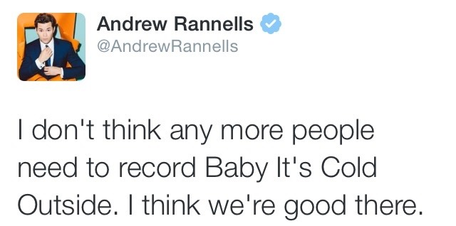
steverogersnotebook:
writersblockstanfever:
theviolentpeach:
bigbutterandeggman:
teachingwithcoffee:
It’s time to bring an end to the Rape Anthem Masquerading As Christmas Carol
Hi there! Former English nerd/teacher here. Also a big fan of jazz of the 30s and 40s.
So. Here’s the thing. Given a cursory glance and applying today’s worldview to the song, yes, you’re right, it absolutely *sounds* like a rape anthem.
BUT! Let’s look closer!
“Hey what’s in this drink” was a stock joke at the time, and the punchline was invariably that there’s actually pretty much nothing in the drink, not even a significant amount of alcohol.
See, this woman is staying late, unchaperoned, at a dude’s house. In the 1940’s, that’s the kind of thing Good Girls aren’t supposed to do — and she wants people to think she’s a good girl. The woman in the song says outright, multiple times, that what other people will think of her staying is what she’s really concerned about: “the neighbors might think,” “my maiden aunt’s mind is vicious,” “there’s bound to be talk tomorrow.” But she’s having a really good time, and she wants to stay, and so she is excusing her uncharacteristically bold behavior (either to the guy or to herself) by blaming it on the drink — unaware that the drink is actually really weak, maybe not even alcoholic at all. That’s the joke. That is the standard joke that’s going on when a woman in media from the early-to-mid 20th century says “hey, what’s in this drink?” It is not a joke about how she’s drunk and about to be raped. It’s a joke about how she’s perfectly sober and about to have awesome consensual sex and use the drink for plausible deniability because she’s living in a society where women aren’t supposed to have sexual agency.
Basically, the song only makes sense in the context of a society in which women are expected to reject men’s advances whether they actually want to or not, and therefore it’s normal and expected for a lady’s gentleman companion to pressure her despite her protests, because he knows she would have to say that whether or not she meant it, and if she really wants to stay she won’t be able to justify doing so unless he offers her an excuse other than “I’m staying because I want to.” (That’s the main theme of the man’s lines in the song, suggesting excuses she can use when people ask later why she spent the night at his house: it was so cold out, there were no cabs available, he simply insisted because he was concerned about my safety in such awful weather, it was perfectly innocent and definitely not about sex at all!) In this particular case, he’s pretty clearly right, because the woman has a voice, and she’s using it to give all the culturally-understood signals that she actually does want to stay but can’t say so. She states explicitly that she’s resisting because she’s supposed to, not because she wants to: “I ought to say no no no…” She states explicitly that she’s just putting up a token resistance so she’ll be able to claim later that she did what’s expected of a decent woman in this situation: “at least I’m gonna say that I tried.” And at the end of the song they’re singing together, in harmony, because they’re both on the same page and they have been all along.
So it’s not actually a song about rape - in fact it’s a song about a woman finding a way to exercise sexual agency in a patriarchal society designed to stop her from doing so. But it’s also, at the same time, one of the best illustrations of rape culture that pop culture has ever produced. It’s a song about a society where women aren’t allowed to say yes…which happens to mean it’s also a society where women don’t have a clear and unambiguous way to say no.
@misledghost
Thank you. As an oldie, I’ve always viewed the song from its original context - although, I can understand why others may not. This is a great breakdown of the song’s original intention! ☺
I’ve loved this song since forever, and only recently started seeing the arguments against it, and that made me feel dirty for liking it. I didn’t stop listening and singing along, I just did so with a feeling of oppression not unlike the original intent of the song. I’m so glad to see someone else putting this song into the context I always believed it to be before the internet!!!
The narrative of this song can be read in a number of different ways, and the particular recording makes a lot of difference.
See the Infamous Brad’s thoughts here.
Class has normative power
bambamramfan:
academicianzex:
bambamramfan:
Redditors on the r/slatestarcodex community were talking about sidrea’s summary of class, so I wanted to jot down some of my own thoughts, and one important dynamic that these discussions miss.
Keep reading
Much of this is excellent, but I have to quibble with the characterization of blue tribe as upper class. It’s true that Trump appeals especially in counties where the opioid epidemic and joblessness are strongest - but it’s also true that the median trump voter is significantly above the median income and republicans are wealthier on average than democrats. They both have claims to be the party of elites, except liberals tend to be academics and journalists with soft power and conservatives tend to be wealthy businessman with all the power that entails.
Yeah but the soft power is what you look up to and what can shame you. I mean a dichotomy between social class and economic class as completely orthogonal things doesn’t work (and neither does separating racial class from the analysis) but if you are simplifying things to that degree, then it’s the social and the intellectual class-aspects that are so good at embarrassing you for pronouncing words incorrectly, being incorrect about basic facts, and having poor moral epistemology. We want to be better at those things and see them in normative terms!
As I’ve said before, I think this is an over-simplification of how the shame dynamic works.
It is true that a room full of swank trendy Dem academics can probably intimidate, and humiliate, a Republican from out in the sticks. “What a moronic racist slob, doesn’t have any real education, doesn’t know what to wear…” And that (to some extent) there’s some actual hierarchy going here, the reverse situation doesn’t have the same kind of effect. (Although, uh, it is worth remembering just how easy it is for a muscly mechanic to cow an egghead nerd, or how Ms. Accomplished Feminist Professor can get antsy around a sufficiently hot stripper…)
It is equally true that a room full of sharp-dressed sharky Republican executives can intimidate, and humiliate, a swank trendy Dem academic. “What a pussy and a loser, doesn’t have any money or any dominant power, doesn’t know wear…” And, again, there is a hierarchy here. The academics can maybe make a lone businessman feel kind of under-educated and behind the times, but ultimately he’s not going to care very much, he has class power over them and not vice versa.
Class is complicated, and the alliances shift around a lot.
chroniclesofrettek:
prokopetz:
Y’know, I totally sympathise with folks calling for major retailers to adopt a zero-tolerance policy against aggressive or abusive customers - I’ve seen first-hand how bad it can get for retail workers - but then I see news stories like the one about those Virginia CVS employees who refused to sell a black man cheese and attempted to justify it with false allegations that he’d behaved threateningly, and I’ve gotta wonder exactly who these hypothetical zero-tolerance policies would end up being enforced against in practice.
Laws and rules in large organizations are sharp weapons that will always be wielded by those with (local) power over those without. Be careful which ones you forge.
This is…true, I guess, but as a principle it’s anti-truth in its impact.
Everything is a weapon that will be wielded by those with power over those without, because that’s what it means to have power. Laws and rules are no exception.
But laws and rules mostly serve to replace discretion (and local power structures) with bureaucracy (and centralized power structures). They constrain the bosses, who have to follow/respect the rules instead of doing whatever the hell they want.
(A zero-tolerance policy, in particular, means “you can’t be lenient towards members of your ingroup” – which can have positive effects, if ingroup-members have been getting away with terrible misdeeds, although all in all I do tend to think that such policies are very bad ideas. Zero-tolerance won’t do much to damage outgroup members, unless it’s replacing or modifying an already-existing concrete policy, because under the discretionary system bosses were already allowed to be awful to the people they didn’t like.)
*****
I actually have strong feelings about this particular thing, and believe that it is very important to understand.
I work for the US federal civil service, which is one of the most rule-bound and bureaucratic institutions ever to exist. This is associated with a lot of frustrations, inefficiencies, and bad outcomes. But it also has some major advantages, and one of the biggest ones is that petty politics and power-plays basically don’t exist, at least not nearly to the extent that they do in the private sector. What would be the point? Why bother scheming, building factions, trying to make your rivals look bad? It won’t get you anything. No one has the power to reward your politicking with goodies, because all the expectations are very clearly laid out in the rules, and the rules determine how all the rewards get distributed. No one can become a little tyrant, because the big tyrant – Congress, with help from the drafters of the agency codes – has micromanaged everything in advance.
It’s easy to find policy-theory enthusiasts, such as @slatestarscratchpad, who make a habit of using standardized test scores as a proxy for school quality / teacher quality / education quality generally.
It’s also easy to find people talking about how standardized test scores aren’t the be-all and end-all of educational value, or even about how they’re basically meaningless.
But you don’t often see people suggesting that, if you’re trying to measure the impact of a school or a teacher on a student’s future prospects, standardized tests might be literally the worst remotely-relevant metric you could choose.
At least in America, almost all the high-stakes tests measure one of two things:
(1) Ability to do simple math problems quickly in a high-speed decontextualized environment
(2) Reading comprehension of simple decontextualized passages that must be absorbed and analyzed quickly
Both of these things seem like they’re pretty much proxies for IQ. Both of these things seem like they will, in fact, correlate with a student’s future success prospects…in the same way that IQ does. (Speed and dexterity with abstract-reasoning tasks are widely useful.) Both of these things seem like they pretty much can’t be taught, or at least like the effects of education will be swamped by the effects of natural talent.
And there are so many other things where education quality can have a huge impact! At least in theory! Students can be instilled with curiosity, and a sense that learning new things is likely to be fun and rewarding. Students can be taught intellectual courage, so that they don’t cringe away from challenges. Students can be taught the organizational skills and self-management strategies that allow them to break down, and execute, big long-term complicated projects.
Hell, students can be taught actual content. Which is important! They can be trained to recognize the references and tropes that underlie the elite culture of their societies. They can be given grounding in the essential facts of history and science. They can, with coaching, develop skills – writing, drawing, programming, you name it.
All of these things are things that a sensible person would pay a teacher to teach. All of these things are things where education quality seems like it should make a huge honking difference.
So why exactly do we evaluate teachers and schools based on student improvement on pseudo-IQ tests, where outside impact will be minimal?
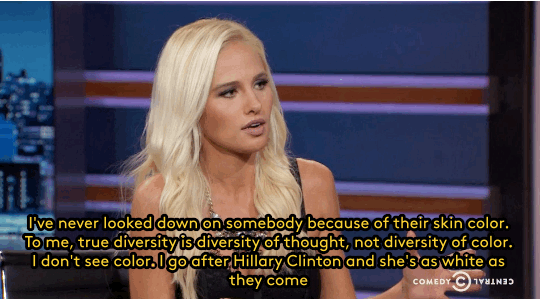
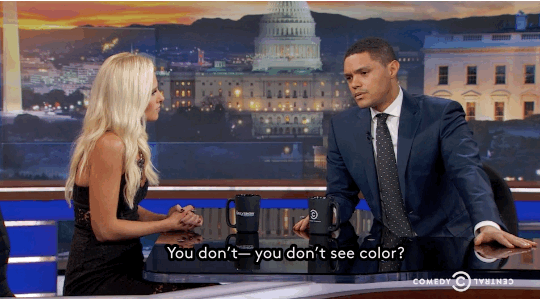
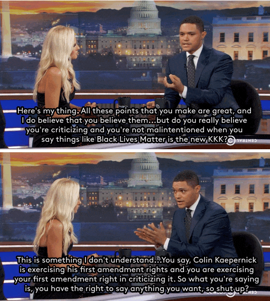
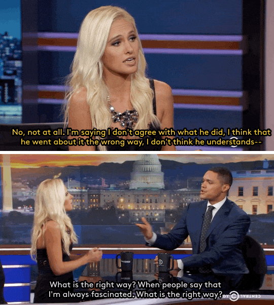
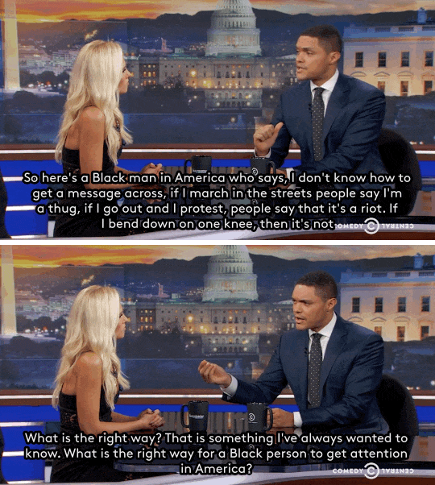
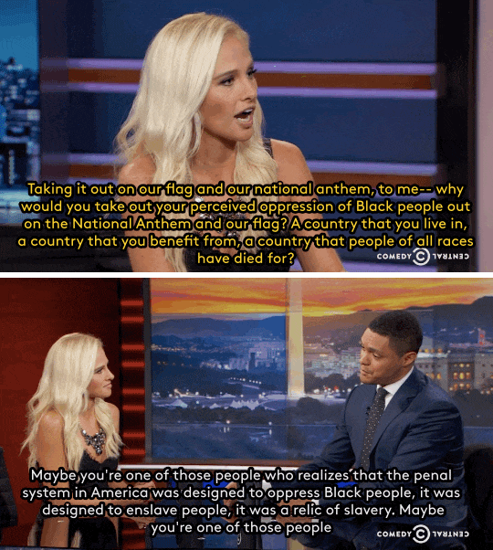
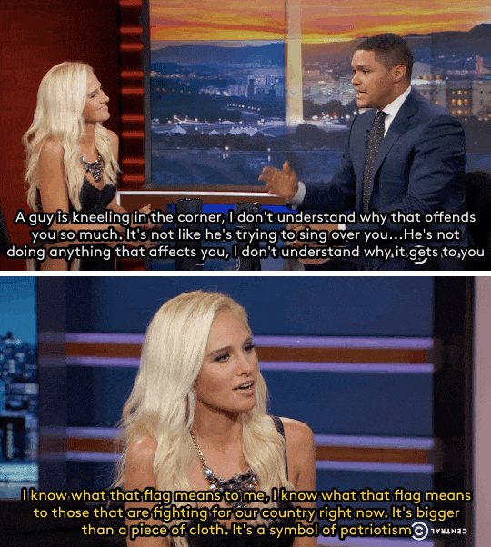
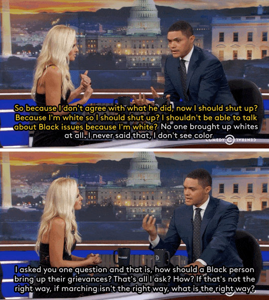
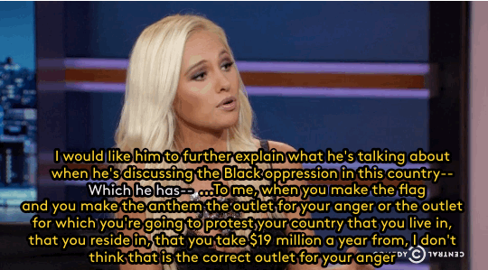
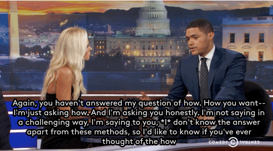
fierceawakening:
zombiepineapples:
fierceawakening:
refinery29:
Trevor Noah just conducted one of his most impressive interviews to date, with one of his most controversial guests. Tomi Lahren, a video host on Glenn Beck’s website The Blaze, stopped by the Daily Show for a conversation that spanned from the Black Lives Matter movement to illegal immigration, and the resulting interview is a must-watch for anyone seeking out reason.
Gifs: cc.com
WATCH THE VIDEO
Okay, so I am not excusing her at ALL, what she said was so angry and nonsensical I found it painful to watch… but does anyone else think they are having two separate conversations?
Like, I keep thinking of Haidt here, and the way he says conservatives use different moral frameworks from liberals. And I keep thinking maybe the thing she’s saying, and the thing that is like… a total wall up in her mind so she can’t even SEE what he’s saying… is that for some conservatives, symbols of the community/society/nation, like the flag and the anthem, are almost sacred. Like, “this is how I know where I belong.”
And so to her, taking a knee isn’t just a criticism, it’s like taking a dump on society at large, which is upsetting and even threatening.
Where what Trevor is saying, and what it seems to me Kaepernick actually means (and I very much agree with), isn’t “fuck America forever, fuck vets, fuck anyone who loves their country,” but rather “this anthem symbolizes a promise the US makes to her citizens, of democracy and safety and freedom. I feel that the US is failing in living up to that for black people, thanks to the violence against us from cops and other racism in our society.”
Like… she isn’t getting what the commentary is because she’s looking at it in a way where she’s not capable of seeing the nuance. And Trevor is trying to point that out, but he doesn’t see where she is coming from so he’s not explaining, just being shocked.
(And again, i speak as someone who SHARES his shock here.)
It does seem as though she believes her explanation is her answer and that this should, in her mind, obvious but it also seems as though Noah is the only one truly making an effort to bridge the gap here.
Oh, I agree.
I don’t think she seems very receptive to alternative views, not at this point (if ever). I’m just musing out loud, wondering whether if someone approached her with the question “what does taking a knee express, in your mind?” and let her fumble for an explanation of what’s so wrong with it, and then said “wait, I think there is an alternate explanation of what taking a knee means. Would you feel any less uncomfortable with it if it meant X rather than Y?” it might get further.
I don’t think she sounds very open, so maybe not. But I do kind of wonder in general if those lines of discussion might work on some folks.
I don’t know. I think some people are beyond talking to and she may well be one of them… but I think we need to find the people we can talk to and build what bridges we can. I’m very impressed with Noah for this.
There’s at least one other [very plausible] facet of the revulsion here, which is something like –
Making a Big Statement of Political Dissidence at a football game turns the football game into just another forum for political struggle. We have enough of those already, really. There are no shortage of places where you can go and talk about how your Hated Outgroup is ruining everything. We don’t have a lot of places left that aren’t forums for political struggle. And if there’s no place for shared cultural ritual and shared just-living-life, if every single thing has to be a fight between you and your Hated Outgroup, if politics always trumps every other consideration in the world – well, that’s going to get very bad for everyone.
We survive because we can hang together, in certain ways, even when we disagree about very important things. Thanks for shitting all over that. Thanks for deciding that your Issue of the Day matters more than our last remaining scraps of non-politicized life.
(And it’s particularly ironic that you’re doing this at a football game, given that football has so much American cultural bonding-mojo that it will allow angry white rednecks to cheer on black millionaires.)
bambamramfan:
isaacsapphire:
thathopeyetlives:
Of all the dreadful anti-SJ perversions of moral and rational thought…
the most silly has to be the idea that far leftists/SJWs/what-have-you are weak.
Some of them definitely are, and I would say that nobody really conforms to the “Social Justice Warrior” stereotype label without being somewhat decadent in a way that would seem to put the lie to their aggressive posture.
Certainly they lost against Trump.
But they are not mere weaklings, and if Trump truly tries to oppress them, the wax will melt away from the dreaded Bolshevik iron.
There’s a LOT of wax there.
There might be the barest structure that could be transformed, but there’s a lot of wax and decadence and fragility and cowardice, even among the most militant and competent of the groups.
They’re not anymore weak than someone who likes posing with guns but freaks out because a woman called him “deplorable” is.
The ideological fervor (on both sides) makes them very *brittle* in a way that can be strong and can be weak. They will be proud in how unyielding they are to threats (or perceived threats), but they will also react to name-calling and evil words from people with no power over them, like 6 year olds afraid of ghosts.
There is the opposite strength in having a stoic, yielding nature, that gives way to many threats and compromises, but never really breaks just because things are not going their way.
I’m honestly not sure what “weak” is being used to mean here. If we’re evaluating some kind of hazy intellectual/ideological strength – the ability to think about things clearly, the ability to respond to circumstances in a measured and practical way, etc. – then I think this analysis mostly holds up.
But it seems very plausible that the OP and @isaacsapphire are trying to talk about concrete operational strength. Y’know, the ability to stop your enemy from doing what he wants. In large part, the ability to perform and/or resist physical violence.
In which case…it seems clear to me that there’s an awful lot of weakness permeating both sides of the American culture war, and indeed pretty much all cultures and subcultures in the First World. See, e.g., this thought. But the weakness on the left is likely to be more dispositive, if it ever comes down to it, just because the culture-warriors on the left mostly don’t have idealized personal narratives involving engagement with physical violence, and therefore they’re going to be even more inclined to shy away from it.